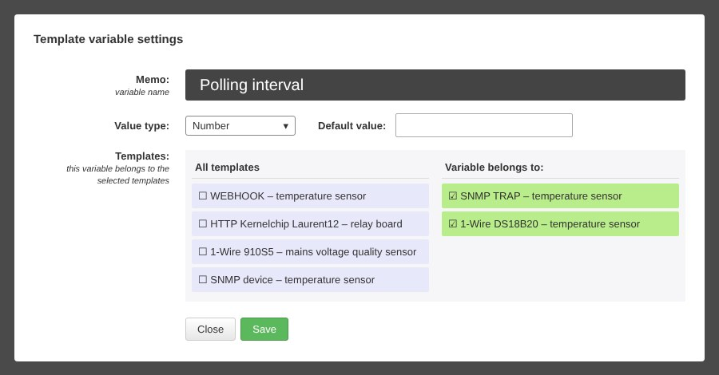
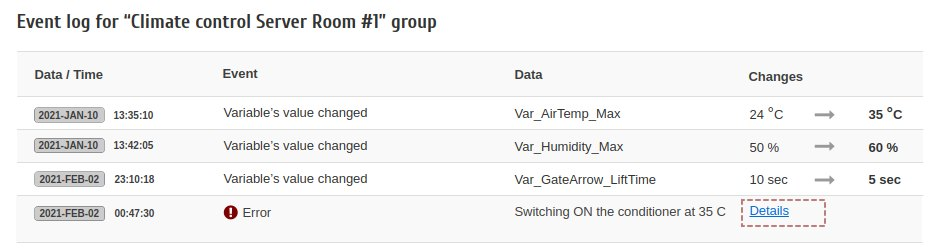

2020–2021 · Производитель оборудования для мониторинга сетей
Прошивка, концепции интерфейсов и архитектура FAD для устройств мониторинга сети
Компания разрабатывает устройства для удалённого мониторинга и управления питанием сетевого оборудования. Я работал удалённо в её отделе разработки ПО для Linux. Идею описывать поведение устройства правилами высказал заказчик; по собственной инициативе, без ТЗ, я предложил, как её реализовать, — архитектуру FAD и серию интерактивных прототипов интерфейса для следующего поколения прошивки на OpenWrt.
Что я сделал
- LTE-шлюз (OpenWrt, SIMCom SIM7600): реализовал SMS-оповещения.
- Настроил Zabbix для мониторинга устройств компании.
- Спроектировал разделение фронтенда и бэкенда для страниц LuCI управления реле и цифровыми входами. Договорился с бэкенд-разработчиком об интерфейсе событий через ubus: текущее состояние устройства хранится в оперативной памяти, а во flash пишется только при явном сохранении — это бережёт её ограниченный ресурс записи.
- Оценил новые модули интерфейса (цифровые входы; правила уведомлений с расписанием режима тишины и условиями доставки) по задачам, отдельно для фронтенда и бэкенда.
- Написал внутренние инженерные статьи об архитектуре ПО и моделировании предметной области.
FAD: каждый модуль — из одного универсального блока
FAD — это Functionality – Adapter – Driver. Драйверы работают с оборудованием и протоколами (SNMP, HTTP, GPIO), адаптеры приводят их данные к единому виду, функциональности реализуют то, что важно пользователю, а виджеты интерфейса это отображают. Все уровни строятся из одного и того же блока.
Шаблоны ресурсов: всё есть ресурс
Датчики, линии вывода, триггеры и уведомления становятся ресурсами, создаваемыми из шаблонов. Шаблон объявляет нужные ему переменные — IP-адрес, SNMP OID, частоту опроса, адрес на шине 1-Wire, — и одна переменная может использоваться во многих шаблонах. Поддержка нового датчика сводится к описанию шаблона, а не к написанию страницы.

Логические правила: поведение как последовательность проверяемых шагов
Группа правил — сценарий работы устройства, например климат-контроль серверной, — состоит из упорядоченных правил. Каждое правило выполняет команду (задать переменную, переключить реле, отправить уведомление) при условиях, построенных на переменных, связанных с датчиками и событиями. В прототипе также были пошаговая проверка и журнал всех изменений переменных.


